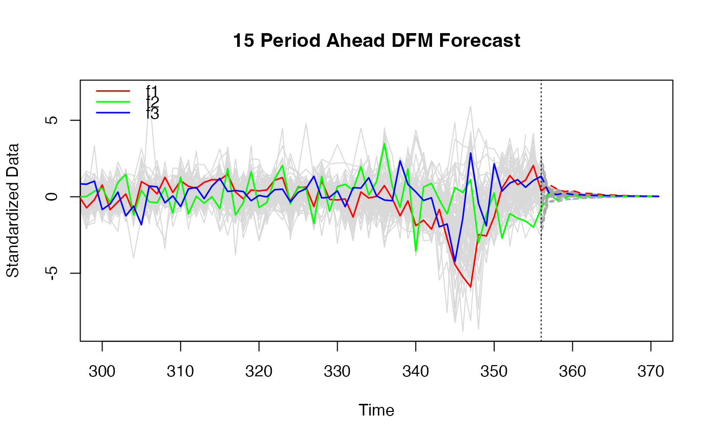
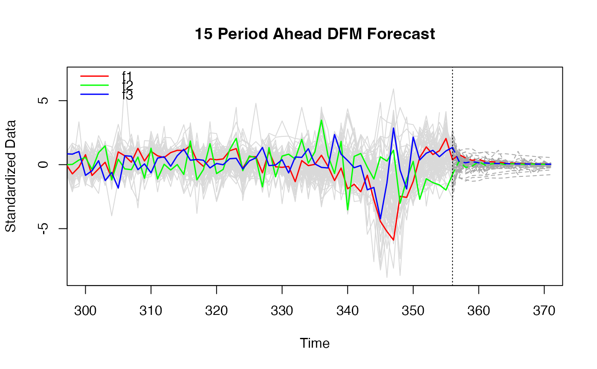

This function produces h-step ahead forecasts of both the factors and the data, with an option to also forecast autocorrelated residuals with a univariate method and produce a combined forecast.
# S3 method for dfm
predict(
object,
h = 10L,
method = switch(object$em.method, none = "2s", "qml"),
standardized = TRUE,
resFUN = NULL,
resAC = 0.1,
...
)
# S3 method for dfm_forecast
print(x, digits = 4L, ...)
# S3 method for dfm_forecast
plot(
x,
main = paste(x$h, "Period Ahead DFM Forecast"),
xlab = "Time",
ylab = "Standardized Data",
factors = seq_len(ncol(x$F)),
scale.factors = TRUE,
factor.col = rainbow(length(factors)),
factor.lwd = 1.5,
fcst.lty = "dashed",
data.col = c("grey85", "grey65"),
legend = TRUE,
legend.items = paste0("f", factors),
grid = FALSE,
vline = TRUE,
vline.lty = "dotted",
vline.col = "black",
...
)
# S3 method for dfm_forecast
as.data.frame(
x,
...,
use = c("factors", "data", "both"),
pivot = c("long", "wide"),
time = seq_len(nrow(x$F) + x$h),
stringsAsFactors = TRUE
)an object of class 'dfm'.
integer. The forecast horizon.
character. The factor estimates to use: one of "qml", "2s" or "pca".
logical. FALSE will return data forecasts on the original scale.
an (optional) function to compute a univariate forecast of the residuals.
The function needs to have a second argument providing the forecast horizon (h) and return a vector or forecasts. See Examples.
numeric. Threshold for residual autocorrelation to apply resFUN: only residual series where AC1 > resAC will be forecasted.
not used.
an object class 'dfm_forecast'.
integer. The number of digits to print out.
character. Graphical parameters passed to ts.plot.
integers indicating which factors to display. Setting this to NA, NULL or 0 will omit factor plots.
logical. Standardize factor estimates, this usually improves the plot since the factor estimates corresponding to the greatest PCA eigenvalues tend to have a greater variance than the data.
graphical parameters affecting the colour and line width of factor estimates plots. See par.
integer or character giving the line type of the forecasts of factors and data. See par.
character vector of length 2 indicating the colours of historical data and forecasts of that data. Setting this to NA, NULL or "" will not plot data and data forecasts.
logical. TRUE draws a legend in the top-left of the chart.
character names of factors for the legend.
logical. TRUE draws a grid on the background of the plot.
logical. TRUE draws a vertical line deliminating historical data and forecasts.
graphical parameters affecting the appearance of the vertical line. See par.
character. Which forecasts to use "factors", "data" or "both".
character. The orientation of the frame: "long" or "wide".
a vector identifying the time dimension, must be of length T + h, or NULL to omit a time variable.
logical. If TRUE and pivot = "long" the 'Variable' column is created as a factor. Same as option to as.data.frame.table.
A list-like object of class 'dfm_forecast' with the following elements:
X_fcst\(h \times n\) matrix with the forecasts of the variables.
F_fcst\(h \times r\) matrix with the factor forecasts.
X\(T \times n\) matrix with the standardized (scaled and centered) data - with attributes attached allowing reconstruction of the original data:
"stats" | is a \(n \times 5\) matrix of summary statistics of class "qsu" (see qsu). Only attached if standardized = TRUE. | ||
"attributes" | contains the attributes of the original data input. | ||
"is.list" | is a logical value indicating whether the original data input was a list / data frame. |
F\(T \times r\) matrix of factor estimates.
methodthe factor estimation method used.
anyNAlogical indicating whether X contains any missing values.
hthe forecast horizon.
resid.fclogical indicating whether a univariate forecasting function was applied to the residuals.
resid.fc.indindices indicating for which variables (columns of X) the residuals were forecasted using the univariate function.
callcall object obtained from match.call().
# \donttest{
library(xts)
library(collapse)
# Fit DFM with 3 factors and 3 lags in the transition equation
mod = DFM(diff(BM14_M), r = 3, p = 3)
#> Converged after 26 iterations.
# 15 period ahead forecast
fc = predict(mod, h = 15)
print(fc)
#> 15 Step Ahead Forecast from Dynamic Factor Model
#>
#> Factor Forecasts
#> f1 f2 f3
#> 1 2.9621 0.6302 0.5202
#> 2 1.9067 -0.5821 0.2764
#> 3 1.2112 -0.3266 0.4844
#> 4 1.5063 0.5408 0.2756
#> 5 0.8329 -0.1443 0.2490
#> 6 0.7555 0.1133 0.1586
#> 7 0.6686 0.2544 0.1433
#> 8 0.3800 0.0005 0.1455
#> 9 0.3847 0.1413 0.0843
#> 10 0.2774 0.1007 0.0806
#> 11 0.1773 0.0345 0.0700
#> 12 0.1725 0.0851 0.0445
#> 13 0.1093 0.0398 0.0419
#> 14 0.0802 0.0305 0.0313
#> 15 0.0701 0.0400 0.0220
#>
#> Series Forecasts
#> ip_total ip_tot_cstr ip_tot_cstr_en ip_constr ip_im_goods ip_capital
#> 1 0.6138 0.6115 0.6460 0.1651 0.5878 0.5235
#> 2 0.1876 0.2603 0.1876 0.0448 0.2593 0.1359
#> 3 0.1144 0.1749 0.1158 0.0167 0.1507 0.0915
#> 4 0.3585 0.3407 0.3795 0.0978 0.3256 0.3111
#> 5 0.0995 0.1300 0.1020 0.0207 0.1189 0.0803
#> 6 0.1453 0.1499 0.1525 0.0378 0.1424 0.1235
#> 7 0.1612 0.1534 0.1709 0.0433 0.1450 0.1408
#> 8 0.0581 0.0686 0.0607 0.0122 0.0605 0.0498
#> 9 0.0916 0.0876 0.0971 0.0245 0.0827 0.0799
#> 10 0.0649 0.0632 0.0689 0.0167 0.0582 0.0572
#> 11 0.0343 0.0366 0.0362 0.0078 0.0323 0.0302
#> 12 0.0454 0.0423 0.0483 0.0121 0.0393 0.0402
#> 13 0.0252 0.0251 0.0267 0.0061 0.0223 0.0224
#> 14 0.0187 0.0186 0.0199 0.0045 0.0165 0.0167
#> 15 0.0194 0.0180 0.0207 0.0051 0.0164 0.0174
#> ip_d_cstr ip_nd_cons ip_en ip_en_2 ip_manuf ip_metals ip_chemicals
#> 1 0.4291 0.3596 0.0360 0.0535 0.6513 0.4595 0.3989
#> 2 0.1012 0.0550 0.0467 0.0330 0.1977 0.2219 0.1742
#> 3 0.0541 0.0275 0.0476 0.0321 0.1225 0.1462 0.0992
#> 4 0.2574 0.2223 0.0129 0.0274 0.3807 0.2501 0.2213
#> 5 0.0566 0.0376 0.0253 0.0190 0.1059 0.1060 0.0793
#> 6 0.0994 0.0818 0.0121 0.0146 0.1543 0.1138 0.0963
#> 7 0.1156 0.1002 0.0066 0.0129 0.1714 0.1122 0.0985
#> 8 0.0360 0.0276 0.0117 0.0098 0.0620 0.0535 0.0403
#> 9 0.0655 0.0567 0.0041 0.0075 0.0974 0.0642 0.0561
#> 10 0.0459 0.0397 0.0042 0.0061 0.0691 0.0463 0.0394
#> 11 0.0228 0.0190 0.0046 0.0046 0.0366 0.0275 0.0217
#> 12 0.0329 0.0290 0.0016 0.0036 0.0483 0.0304 0.0267
#> 13 0.0175 0.0152 0.0023 0.0028 0.0268 0.0183 0.0150
#> 14 0.0131 0.0113 0.0017 0.0021 0.0200 0.0136 0.0111
#> 15 0.0141 0.0126 0.0008 0.0016 0.0207 0.0128 0.0111
#> ip_electric ip_machinery ip_paper ip_plastic new_cars orders
#> 1 0.5388 0.4469 0.3636 0.4959 0.0648 0.3823
#> 2 0.1468 0.1016 0.1557 0.2079 0.0137 0.1856
#> 3 0.0934 0.0656 0.0923 0.1255 -0.0016 0.1265
#> 4 0.3187 0.2689 0.2025 0.2771 0.0393 0.2079
#> 5 0.0830 0.0623 0.0727 0.0987 0.0045 0.0902
#> 6 0.1270 0.1044 0.0880 0.1201 0.0141 0.0952
#> 7 0.1438 0.1216 0.0904 0.1239 0.0171 0.0935
#> 8 0.0505 0.0403 0.0375 0.0515 0.0029 0.0458
#> 9 0.0816 0.0689 0.0515 0.0706 0.0096 0.0535
#> 10 0.0581 0.0490 0.0364 0.0500 0.0061 0.0389
#> 11 0.0305 0.0252 0.0202 0.0279 0.0023 0.0234
#> 12 0.0409 0.0349 0.0246 0.0339 0.0047 0.0254
#> 13 0.0226 0.0191 0.0140 0.0194 0.0020 0.0155
#> 14 0.0169 0.0143 0.0104 0.0143 0.0015 0.0115
#> 15 0.0176 0.0151 0.0103 0.0143 0.0019 0.0107
#> ret_turnover_defl ecs_ec_sent_ind ecs_ind_conf ecs_ind_order_book
#> 1 0.0381 0.5094 0.5126 0.5254
#> 2 0.0203 0.4927 0.5138 0.4636
#> 3 0.0069 0.3269 0.3320 0.3041
#> 4 0.0204 0.2221 0.2196 0.2391
#> 5 0.0069 0.2053 0.2094 0.1945
#> 6 0.0089 0.1398 0.1408 0.1414
#> 7 0.0087 0.0976 0.0957 0.1053
#> 8 0.0029 0.0845 0.0844 0.0817
#> 9 0.0049 0.0572 0.0561 0.0614
#> 10 0.0032 0.0428 0.0416 0.0454
#> 11 0.0015 0.0337 0.0330 0.0338
#> 12 0.0022 0.0224 0.0213 0.0250
#> 13 0.0010 0.0175 0.0168 0.0184
#> 14 0.0008 0.0127 0.0121 0.0133
#> 15 0.0008 0.0084 0.0078 0.0097
#> ecs_ind_stocks ecs_ind_prod_exp ecs_ind_prod_rec_m ecs_ind_x_orders
#> 1 -0.3060 0.3782 0.3546 0.4885
#> 2 -0.3504 0.4192 0.2736 0.4208
#> 3 -0.2248 0.2679 0.1777 0.2742
#> 4 -0.1213 0.1530 0.1701 0.2246
#> 5 -0.1395 0.1672 0.1168 0.1766
#> 6 -0.0863 0.1058 0.0932 0.1308
#> 7 -0.0522 0.0660 0.0753 0.0989
#> 8 -0.0542 0.0653 0.0508 0.0745
#> 9 -0.0309 0.0389 0.0436 0.0575
#> 10 -0.0231 0.0289 0.0319 0.0424
#> 11 -0.0199 0.0244 0.0221 0.0310
#> 12 -0.0106 0.0137 0.0186 0.0237
#> 13 -0.0093 0.0117 0.0127 0.0171
#> 14 -0.0067 0.0083 0.0093 0.0124
#> 15 -0.0036 0.0047 0.0074 0.0092
#> ecs_ind_empl_exp ecs_cons_conf ecs_cons_sit_over_next_12 ecs_cons_exp_unempl
#> 1 0.4212 0.3766 0.3036 -0.3700
#> 2 0.3662 0.3168 0.2890 -0.2953
#> 3 0.2435 0.2208 0.1963 -0.2048
#> 4 0.1929 0.1748 0.1334 -0.1753
#> 5 0.1553 0.1392 0.1225 -0.1305
#> 6 0.1134 0.1018 0.0835 -0.0990
#> 7 0.0852 0.0780 0.0590 -0.0783
#> 8 0.0659 0.0606 0.0512 -0.0575
#> 9 0.0496 0.0454 0.0345 -0.0455
#> 10 0.0369 0.0343 0.0261 -0.0341
#> 11 0.0274 0.0257 0.0206 -0.0248
#> 12 0.0204 0.0191 0.0137 -0.0195
#> 13 0.0150 0.0143 0.0108 -0.0141
#> 14 0.0109 0.0104 0.0079 -0.0103
#> 15 0.0080 0.0076 0.0053 -0.0078
#> ecs_cons_gen_last_12m ecs_cstr_conf ecs_cstr_order_books ecs_cstr_empl_exp
#> 1 0.3724 0.2204 0.1609 0.1915
#> 2 0.2827 0.1776 0.1512 0.1344
#> 3 0.2025 0.1267 0.1048 0.0981
#> 4 0.1796 0.1040 0.0711 0.0948
#> 5 0.1285 0.0797 0.0651 0.0627
#> 6 0.0994 0.0594 0.0444 0.0506
#> 7 0.0807 0.0466 0.0316 0.0428
#> 8 0.0580 0.0354 0.0275 0.0291
#> 9 0.0468 0.0271 0.0185 0.0248
#> 10 0.0354 0.0206 0.0141 0.0187
#> 11 0.0256 0.0153 0.0112 0.0132
#> 12 0.0205 0.0116 0.0074 0.0111
#> 13 0.0148 0.0086 0.0059 0.0078
#> 14 0.0108 0.0063 0.0043 0.0057
#> 15 0.0084 0.0047 0.0029 0.0046
#> ecs_cstr_prod_recent ecs_ret_tr_conf ecs_ret_tr_bus_sit ecs_ret_tr_stocks
#> 1 0.1436 0.1330 0.0860 -0.0238
#> 2 0.1077 0.1385 0.0835 -0.0376
#> 3 0.0735 0.0943 0.0598 -0.0241
#> 4 0.0696 0.0558 0.0374 -0.0071
#> 5 0.0476 0.0580 0.0365 -0.0144
#> 6 0.0379 0.0373 0.0240 -0.0072
#> 7 0.0310 0.0246 0.0167 -0.0029
#> 8 0.0212 0.0237 0.0155 -0.0052
#> 9 0.0180 0.0145 0.0098 -0.0018
#> 10 0.0134 0.0111 0.0076 -0.0014
#> 11 0.0094 0.0092 0.0063 -0.0016
#> 12 0.0078 0.0055 0.0039 -0.0003
#> 13 0.0055 0.0046 0.0033 -0.0006
#> 14 0.0040 0.0033 0.0024 -0.0004
#> 15 0.0032 0.0020 0.0015 0.0000
#> ecs_ret_tr_exp_bus ecs_ret_tr_empl ecs_serv_conf ecs_serv_empl_exp
#> 1 0.1486 0.1285 0.3081 0.2446
#> 2 0.1535 0.0821 0.2812 0.1926
#> 3 0.1013 0.0455 0.1866 0.1280
#> 4 0.0626 0.0656 0.1381 0.1165
#> 5 0.0631 0.0333 0.1182 0.0831
#> 6 0.0413 0.0321 0.0836 0.0647
#> 7 0.0274 0.0287 0.0609 0.0517
#> 8 0.0255 0.0146 0.0494 0.0362
#> 9 0.0161 0.0164 0.0355 0.0300
#> 10 0.0121 0.0114 0.0265 0.0221
#> 11 0.0099 0.0068 0.0202 0.0157
#> 12 0.0061 0.0073 0.0143 0.0128
#> 13 0.0050 0.0043 0.0108 0.0089
#> 14 0.0036 0.0031 0.0078 0.0065
#> 15 0.0022 0.0029 0.0055 0.0051
#> pms_comp_output pms_comp_empl pms_pmi pms_manuf_empl pms_manuf_output
#> 1 0.3414 0.3263 0.3698 0.3868 0.3338
#> 2 0.3230 0.3038 0.3653 0.3547 0.3181
#> 3 0.2231 0.1982 0.2461 0.2406 0.2167
#> 4 0.1504 0.1449 0.1595 0.1730 0.1466
#> 5 0.1385 0.1260 0.1532 0.1511 0.1351
#> 6 0.0941 0.0886 0.1023 0.1056 0.0919
#> 7 0.0668 0.0636 0.0703 0.0766 0.0648
#> 8 0.0583 0.0520 0.0631 0.0636 0.0564
#> 9 0.0391 0.0371 0.0412 0.0447 0.0380
#> 10 0.0298 0.0275 0.0312 0.0337 0.0288
#> 11 0.0236 0.0210 0.0250 0.0260 0.0228
#> 12 0.0157 0.0147 0.0160 0.0181 0.0151
#> 13 0.0125 0.0111 0.0129 0.0139 0.0119
#> 14 0.0090 0.0081 0.0093 0.0101 0.0087
#> 15 0.0061 0.0056 0.0060 0.0070 0.0058
#> pms_manuf_product pms_serv_out pms_serv_empl pms_serv_new_bus
#> 1 0.2106 0.2777 0.2131 0.2985
#> 2 0.2185 0.2625 0.1980 0.2794
#> 3 0.1364 0.1821 0.1248 0.1908
#> 4 0.0886 0.1224 0.0948 0.1322
#> 5 0.0867 0.1129 0.0804 0.1192
#> 6 0.0578 0.0766 0.0574 0.0819
#> 7 0.0382 0.0544 0.0413 0.0586
#> 8 0.0341 0.0476 0.0328 0.0501
#> 9 0.0224 0.0318 0.0241 0.0343
#> 10 0.0163 0.0243 0.0176 0.0259
#> 11 0.0130 0.0193 0.0132 0.0203
#> 12 0.0082 0.0128 0.0095 0.0137
#> 13 0.0065 0.0102 0.0070 0.0108
#> 14 0.0046 0.0074 0.0050 0.0078
#> 15 0.0029 0.0049 0.0035 0.0053
#> pms_serv_product urx empl_total empl_tot_xc empl_cstr empl_manuf
#> 1 0.1839 -0.3076 0.3256 0.1716 0.4061 0.1826
#> 2 0.1874 -0.1154 0.1055 0.0174 0.2104 0.0241
#> 3 0.1284 -0.0809 0.0916 0.0246 0.1560 0.0290
#> 4 0.0780 -0.1748 0.1887 0.1080 0.2178 0.1136
#> 5 0.0791 -0.0612 0.0656 0.0217 0.1056 0.0247
#> 6 0.0514 -0.0749 0.0799 0.0402 0.1030 0.0430
#> 7 0.0344 -0.0791 0.0866 0.0499 0.0987 0.0524
#> 8 0.0326 -0.0338 0.0388 0.0170 0.0534 0.0184
#> 9 0.0203 -0.0451 0.0494 0.0283 0.0567 0.0297
#> 10 0.0155 -0.0327 0.0368 0.0209 0.0421 0.0220
#> 11 0.0128 -0.0186 0.0217 0.0112 0.0267 0.0118
#> 12 0.0078 -0.0221 0.0248 0.0149 0.0269 0.0156
#> 13 0.0065 -0.0130 0.0152 0.0086 0.0173 0.0090
#> 14 0.0047 -0.0097 0.0113 0.0064 0.0128 0.0067
#> 15 0.0029 -0.0095 0.0109 0.0067 0.0114 0.0070
#> extra_ea_trade_exp_val intra_ea_trade_exp_val extra_ea_trade_imp_val
#> 1 0.3718 0.4140 0.3356
#> 2 0.1063 0.1588 0.1259
#> 3 0.0579 0.1018 0.0675
#> 4 0.2189 0.2346 0.1909
#> 5 0.0551 0.0798 0.0585
#> 6 0.0870 0.1001 0.0797
#> 7 0.0981 0.1054 0.0850
#> 8 0.0327 0.0433 0.0313
#> 9 0.0556 0.0601 0.0483
#> 10 0.0390 0.0430 0.0337
#> 11 0.0199 0.0239 0.0177
#> 12 0.0276 0.0292 0.0234
#> 13 0.0149 0.0168 0.0127
#> 14 0.0111 0.0125 0.0094
#> 15 0.0118 0.0124 0.0098
#> intra_ea_trade_imp_val us_ip us_urx us_empl us_retail_sales
#> 1 0.3489 0.3098 -0.2915 0.2147 0.1911
#> 2 0.1161 0.2103 -0.1946 0.1654 0.1106
#> 3 0.0679 0.1335 -0.1266 0.1090 0.0709
#> 4 0.2017 0.1551 -0.1466 0.1031 0.0999
#> 5 0.0586 0.0908 -0.0855 0.0713 0.0497
#> 6 0.0828 0.0796 -0.0750 0.0566 0.0481
#> 7 0.0904 0.0687 -0.0652 0.0457 0.0445
#> 8 0.0331 0.0407 -0.0389 0.0312 0.0235
#> 9 0.0514 0.0396 -0.0376 0.0265 0.0256
#> 10 0.0362 0.0286 -0.0273 0.0195 0.0184
#> 11 0.0192 0.0186 -0.0179 0.0136 0.0114
#> 12 0.0252 0.0175 -0.0167 0.0114 0.0117
#> 13 0.0139 0.0113 -0.0109 0.0078 0.0073
#> 14 0.0104 0.0083 -0.0080 0.0057 0.0053
#> 15 0.0107 0.0071 -0.0068 0.0045 0.0048
#> us_ip_manuf_exp us_cons_exp us_r3_m us_r10_year m3 loans ir_long
#> 1 0.0674 -0.0084 0.1569 0.1460 0.0353 0.0683 0.1689
#> 2 0.1353 0.0719 0.2166 0.1969 -0.0517 0.0058 0.1302
#> 3 0.0845 0.0388 0.1185 0.1035 -0.0302 -0.0128 0.0997
#> 4 0.0137 -0.0215 0.0541 0.0514 0.0345 0.0434 0.0810
#> 5 0.0499 0.0214 0.0762 0.0677 -0.0145 -0.0005 0.0616
#> 6 0.0218 0.0013 0.0443 0.0406 0.0054 0.0139 0.0458
#> 7 0.0049 -0.0109 0.0214 0.0202 0.0164 0.0186 0.0368
#> 8 0.0168 0.0043 0.0257 0.0224 -0.0017 0.0007 0.0283
#> 9 0.0033 -0.0059 0.0128 0.0120 0.0090 0.0104 0.0214
#> 10 0.0027 -0.0044 0.0085 0.0077 0.0064 0.0063 0.0166
#> 11 0.0047 -0.0007 0.0080 0.0069 0.0018 0.0016 0.0125
#> 12 -0.0005 -0.0044 0.0030 0.0028 0.0057 0.0052 0.0094
#> 13 0.0011 -0.0018 0.0029 0.0025 0.0025 0.0019 0.0071
#> 14 0.0007 -0.0015 0.0019 0.0016 0.0019 0.0014 0.0052
#> 15 -0.0007 -0.0023 0.0004 0.0004 0.0027 0.0021 0.0039
#> ir_short ir_1_year ir_2_year ir_5_year eer eer_cpi eer_ppi exr_usd
#> 1 0.2798 0.3213 0.2788 0.1809 0.1761 0.1481 0.1986 0.2221
#> 2 0.1613 0.2305 0.2313 0.1791 -0.0193 -0.0312 -0.0045 0.0415
#> 3 0.1027 0.1498 0.1581 0.1098 0.1229 0.1125 0.1320 0.1443
#> 4 0.1465 0.1581 0.1301 0.0780 0.1183 0.1027 0.1297 0.1349
#> 5 0.0723 0.0998 0.1006 0.0708 0.0578 0.0509 0.0641 0.0746
#> 6 0.0704 0.0835 0.0749 0.0490 0.0507 0.0436 0.0564 0.0624
#> 7 0.0653 0.0701 0.0579 0.0336 0.0629 0.0557 0.0679 0.0688
#> 8 0.0342 0.0443 0.0437 0.0280 0.0471 0.0433 0.0499 0.0512
#> 9 0.0374 0.0405 0.0337 0.0197 0.0364 0.0323 0.0393 0.0399
#> 10 0.0269 0.0295 0.0252 0.0142 0.0345 0.0314 0.0366 0.0360
#> 11 0.0166 0.0199 0.0186 0.0109 0.0266 0.0246 0.0279 0.0274
#> 12 0.0172 0.0177 0.0142 0.0074 0.0215 0.0195 0.0228 0.0221
#> 13 0.0106 0.0118 0.0104 0.0055 0.0179 0.0166 0.0187 0.0179
#> 14 0.0078 0.0086 0.0076 0.0040 0.0135 0.0125 0.0141 0.0135
#> 15 0.0071 0.0071 0.0056 0.0027 0.0110 0.0101 0.0115 0.0109
#> exr_gbp rxr_yen euro50 euro325 sp500 dow_j raw_mat_en raw_mat_oil
#> 1 -0.0422 0.2147 0.1997 0.2148 0.2047 0.2084 0.1874 0.2583
#> 2 -0.1312 0.0957 0.2098 0.2262 0.1758 0.1659 0.1901 0.1864
#> 3 -0.0067 0.1389 0.1172 0.1305 0.1191 0.1118 0.0746 0.1495
#> 4 0.0013 0.1182 0.0835 0.0897 0.0942 0.0989 0.0801 0.1266
#> 5 -0.0171 0.0769 0.0776 0.0853 0.0756 0.0720 0.0582 0.0919
#> 6 -0.0090 0.0599 0.0537 0.0581 0.0552 0.0554 0.0471 0.0698
#> 7 0.0068 0.0581 0.0351 0.0379 0.0418 0.0439 0.0317 0.0580
#> 8 0.0058 0.0449 0.0288 0.0322 0.0324 0.0314 0.0179 0.0435
#> 9 0.0039 0.0337 0.0205 0.0222 0.0243 0.0255 0.0183 0.0337
#> 10 0.0074 0.0292 0.0141 0.0155 0.0182 0.0189 0.0105 0.0264
#> 11 0.0063 0.0224 0.0106 0.0120 0.0136 0.0136 0.0059 0.0196
#> 12 0.0053 0.0174 0.0072 0.0079 0.0101 0.0109 0.0059 0.0152
#> 13 0.0053 0.0140 0.0051 0.0058 0.0075 0.0077 0.0027 0.0115
#> 14 0.0041 0.0105 0.0036 0.0041 0.0054 0.0056 0.0018 0.0084
#> 15 0.0036 0.0082 0.0023 0.0026 0.0040 0.0043 0.0015 0.0065
#> raw_mat_gold raw_mat_oil_fwd raw_mat
#> 1 0.0669 0.2083 0.2113
#> 2 0.0036 0.1996 0.2005
#> 3 0.0460 0.1257 0.1123
#> 4 0.0426 0.0913 0.0931
#> 5 0.0227 0.0806 0.0755
#> 6 0.0191 0.0564 0.0558
#> 7 0.0222 0.0397 0.0396
#> 8 0.0168 0.0326 0.0290
#> 9 0.0129 0.0232 0.0230
#> 10 0.0120 0.0169 0.0159
#> 11 0.0092 0.0129 0.0113
#> 12 0.0074 0.0090 0.0087
#> 13 0.0061 0.0067 0.0058
#> 14 0.0046 0.0048 0.0042
#> 15 0.0037 0.0033 0.0030
plot(fc, xlim = c(300, 370))

# Also forecasting autocorrelated residuals with an AR(1)
fcfun <- function(x, h) predict(ar(na_rm(x)), n.ahead = h)$pred
fcar = predict(mod, resFUN = fcfun, h = 15)
plot(fcar, xlim = c(300, 370))

# Retrieving a data frame of the forecasts
head(as.data.frame(fcar, pivot = "wide")) # Factors
#> Time Forecast f1 f2 f3
#> 1 1 FALSE 3.0487579 -4.371719 -0.1134302
#> 2 2 FALSE -0.4236117 -2.190223 -6.3464355
#> 3 3 FALSE -9.4779810 3.824410 -2.1678243
#> 4 4 FALSE -10.8844746 6.942244 0.4569135
#> 5 5 FALSE -6.0722144 1.303051 0.7505150
#> 6 6 FALSE -1.0811737 -2.430000 1.5735378
head(as.data.frame(fcar, use = "data")) # Data
#> Variable Time Forecast Value
#> 1 ip_total 1 FALSE NA
#> 2 ip_total 2 FALSE NA
#> 3 ip_total 3 FALSE NA
#> 4 ip_total 4 FALSE NA
#> 5 ip_total 5 FALSE NA
#> 6 ip_total 6 FALSE NA
head(as.data.frame(fcar, use = "both")) # Both
#> Variable Time Forecast Value
#> 1 f1 1 FALSE 3.0487579
#> 2 f1 2 FALSE -0.4236117
#> 3 f1 3 FALSE -9.4779810
#> 4 f1 4 FALSE -10.8844746
#> 5 f1 5 FALSE -6.0722144
#> 6 f1 6 FALSE -1.0811737
# }